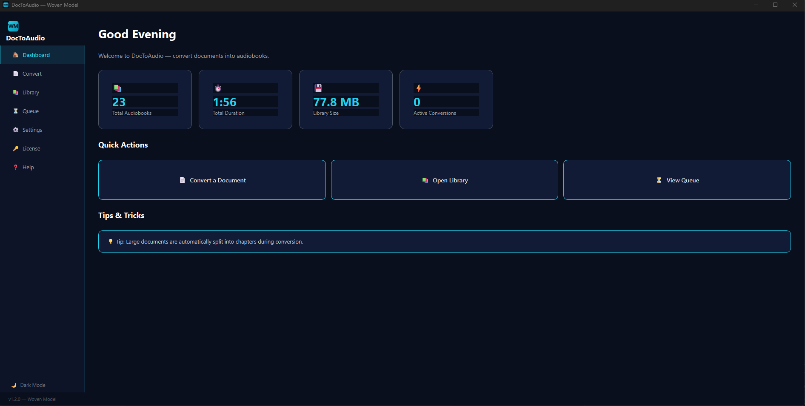
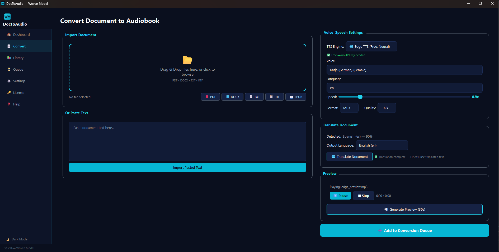
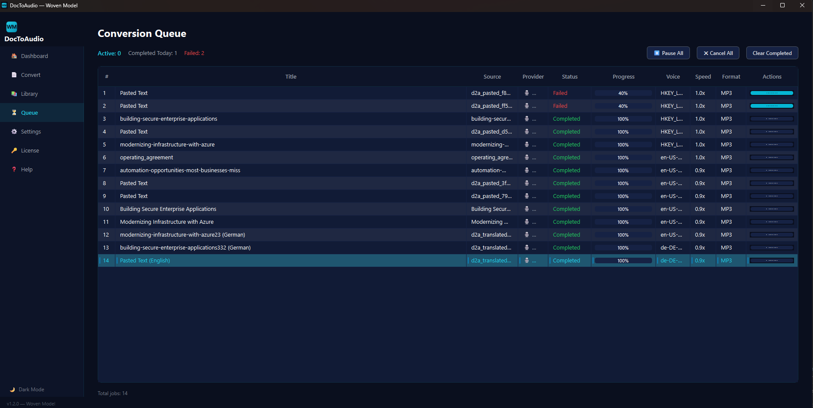
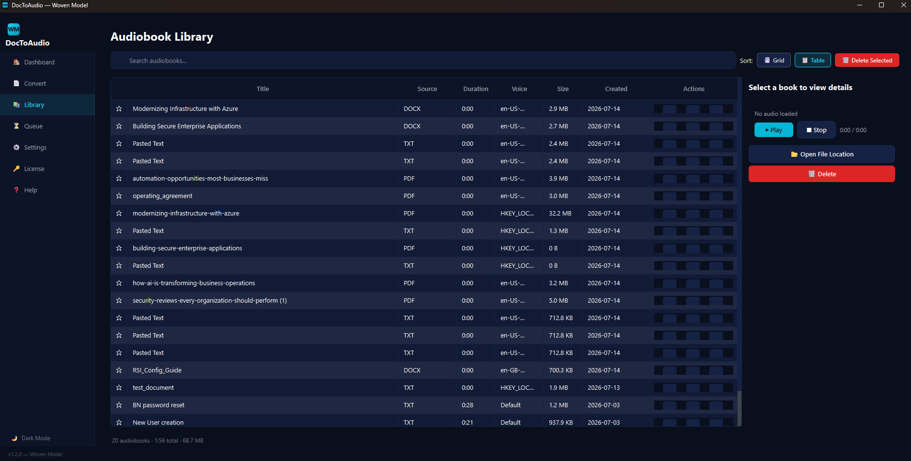
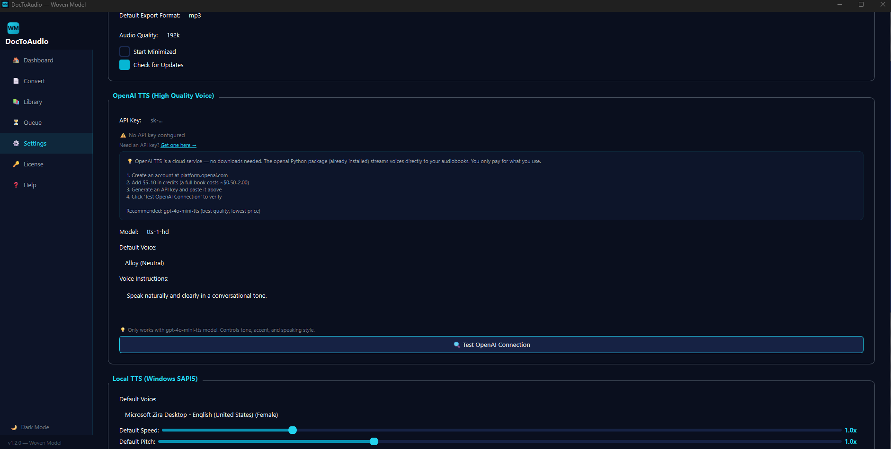
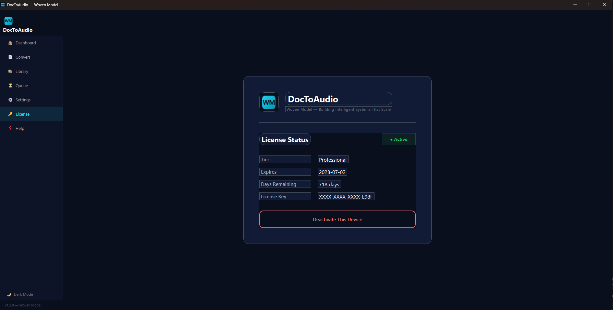

A professional desktop application that converts PDF, DOCX, EPUB, TXT, and RTF documents into high-quality audiobooks. Features 3 TTS engines, built-in multilingual translation, and a background conversion queue — all wrapped in a sleek Woven Model interface.
DocToAudio turns any document into an audiobook. Import a PDF, EPUB, or Word file — or paste text directly — and get back a professional audio file. With three TTS engines, built-in translation to 100+ languages, and speech-optimized output, it's the most versatile document-to-audio tool on Windows.
Drag-and-drop or browse for PDF, DOCX, TXT, RTF, and EPUB files. Paste raw text for instant conversion. Supports all major document formats.
Choose from Local Windows SAPI5 (offline), OpenAI (premium neural voices), or Edge TTS (free neural voices, no API key needed). Switch with one click.
Auto-detect the source language of your document, select any of 100+ target languages, and generate the audiobook in the translated language. Spanish book → English audiobook in one click.
Before TTS generation, translated text is automatically optimized: abbreviations expanded, comma chains split, sentences restructured for natural narration.
Queue multiple document conversions and keep working while they process. Track progress, retry failed jobs, and pause/resume the queue at any time.
Browse, search, sort, and play completed audiobooks right in the app. Mark favorites, rename titles, open file locations, and delete with confirmation.
KPI cards showing total audiobooks, total duration, and storage used. Quick-action buttons and recent audiobook list.
Document import, language auto-detection, target language selection, TTS engine/voice config, 30-second preview, and queue submission.
Searchable table of all your audiobooks with columns for title, source, duration, voice, size, and creation date. Inline player and file management.
DocToAudio is a full-featured desktop application. Below is a complete breakdown of every tab and what it does.
Purpose: At-a-glance summary of your conversion activity and library stats.
Purpose: The heart of DocToAudio — import, translate, configure TTS, preview, and queue.
Purpose: Browse, search, play, and manage all completed audiobooks.
Purpose: Monitor and manage active, completed, and failed conversions.
Purpose: Configure all app preferences — output folder, TTS defaults, API keys, theme.
Purpose: License activation, 14-day free trial management, and deactivation.
DocToAudio is the only document-to-audio converter with three TTS engines built in. Choose based on your needs — no other tool offers this flexibility.
Windows built-in voices. No internet required. Basic quality but always available. Good for quick offline conversions.
Requires ffmpeg for MP3/OGG export
Premium GPT-4o neural voices. Best quality. Supports voice instructions for tone, accent, and style control. 10 voices available.
Requires API key. No ffmpeg needed.
Microsoft Edge neural voices. No API key needed, no payment, no setup. 22+ natural voices, 100+ languages. The best all-around choice.
Requires internet. No ffmpeg needed.
| Feature | Local (SAPI5) | OpenAI | Edge (Free) |
|---|---|---|---|
| Internet Required | ❌ No | ✅ Yes | ✅ Yes |
| Cost | Free | ~$0.015/min | Free |
| Voice Quality | Basic | Excellent | Good (Neural) |
| Speed Control | ✅ 0.5x-3x | ✅ 0.25x-4x | ✅ Yes |
| Pitch Control | ✅ Yes | ❌ No | ✅ Yes |
| Languages | OS Voices | English only | 100+ |
| Voice Instructions | ❌ No | ✅ Yes | ❌ No |
| API Key Needed | ❌ No | ✅ Yes | ❌ No |
| ffmpeg Needed | For MP3/OGG | ❌ No | ❌ No |
| Voices | System | 10 | 22+ |
| Setup Time | None | 5 minutes | None |
Upload a document in any language and get an audiobook in another. The entire translation + TTS-optimization pipeline runs seamlessly in the background.
Upload a PDF, DOCX, EPUB, TXT, or RTF file — or paste text directly. Language is auto-detected using langdetect.
Pick from 17 common languages (English, Spanish, French, German, Chinese, Japanese, etc.) with support for 100+ total.
Click "🌐 Translate Document". Translation runs in a background QThread with progress updates. Powered by Google Translate via deep-translator — free, no API key.
Translated text is automatically optimized for TTS: abbreviations expanded, semicolons replaced, comma chains split, parentheses inlined, long paragraphs broken.
Add to the queue — the translated and optimized text is used for audio. Output filename includes the target language. Use Edge TTS for best multilingual voice support.
Uses langdetect for automatic source language identification from the first 2000 characters. Confidence score shown in UI.
Free neural translation via deep-translator. Paragraph-preserving — headings and structure maintained. Translations cached to disk.
Custom tts_optimizer.py expands abbreviations (Dr. → Doctor, e.g. → for example), replaces punctuation, and ensures natural speech flow.
Real screenshots from the running application showing every major page.






1. Drag PDF to Convert page
2. Select Edge TTS (free, zero setup)
3. Click "Generate Preview" to test
4. Click "Add to Conversion Queue"
5. Find audiobook in Library → play
1. Import Spanish EPUB
2. Language auto-detects as "Spanish"
3. Select "English (en)" as output
4. Click "🌐 Translate Document"
5. Text is translated + TTS-optimized
6. Add to queue → "Title (English).mp3"
1. Import and configure first document
2. Add to queue → Queue button
3. Import second document, change settings
4. Add to queue
5. Switch to Queue page to monitor all jobs
6. Retry any failures with one click
DocToAudio is available now. Get started with a 14-day free trial — all features unlocked, including the speech optimizer and all three TTS engines.
Windows only · Python 3.10+ required · Edge TTS free forever · No account needed for trial